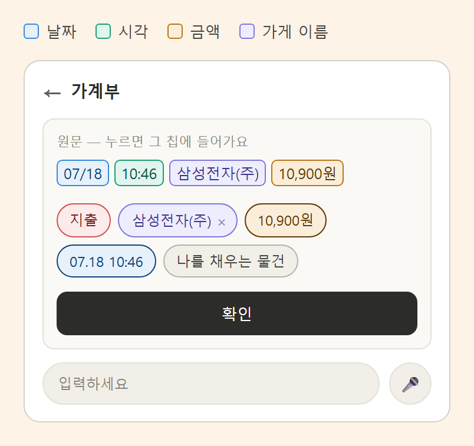
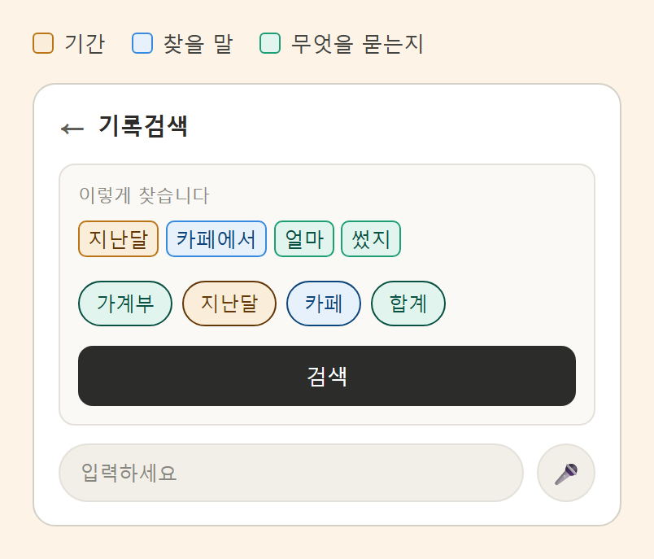
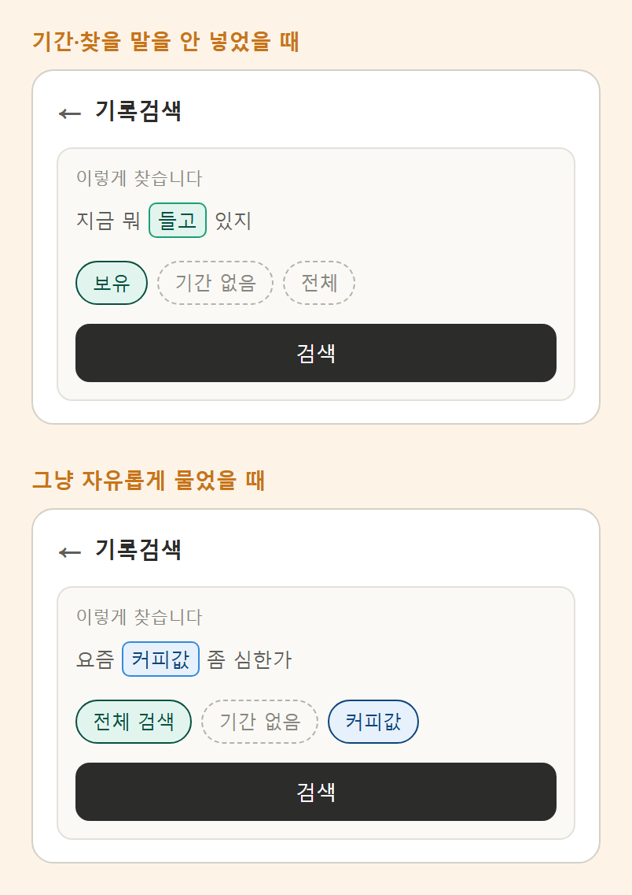

포핏 사용 가이드
알림만 켜두면 기록은 포핏이 할게요 🐾

포핏은 알림으로 기록해요
카드 결제, 주식 체결, 계좌 입출금… 폰에 뜨는 알림을 포핏이 읽고 자동으로 기록해요. 직접 입력할 필요가 없어요.

알림은 모아뒀다가, 앱을 열면 적기 시작해요. 포핏은 도착한 알림을 차곡차곡 저장해 두고, 앱이 다시 켜질 때 일지를 씁니다. 몇 건 안 될 땐 금방 끝나지만, 많이 쌓이면 그만큼 시간이 걸려요. 가끔 앱을 열어 포핏이 일할 시간을 주세요! 🐾
폰 설정에서 배터리 제한을 풀어주면 혹시 모를 알림 놓침도 막을 수 있어요.
카카오톡으로 알림을 받는다면 (중요!)
증권사·카드사 알림을 카카오톡으로 받고 있다면, 설정 두 가지만 챙겨 주세요.
- 카톡 알림 표시를 "이름+메시지"로 — 카카오톡 설정 → 알림 → 알림 표시에서 이름+메시지(제목+내용)를 골라주세요. 내용 없이 "새 메시지가 도착했습니다"만 뜨면 포핏도 읽을 게 없어요.
- 알림이 시끄러우면 "무음"으로 — 폰 설정 → 애플리케이션 → 카카오톡 → 알림에서 소리만 꺼주세요(무음). 조용히 떠도 포핏은 똑같이 읽어요.
홈화면 둘러보기
홈에는 네 개의 방이 있어요 — 내돈GPS(가계부), 개미일기(매매일지), 포핏플레이, To the moon(코인일지).
왼쪽 위 구슬이 모드 토글이에요. 한 번 누르면 일지 모드 ↔ 시각화 모드가 바뀌어요.


포핏 체력바 — 하루치 일할 힘
모드 토글 옆, 흐르는 글자와 겹쳐 보이는 가는 게이지가 포핏 체력바예요. 포핏이 하루 동안 일할 수 있는 힘이라, 알림을 처리할 때마다 조금씩 줄고 매일 새로 채워져요.
홈 2페이지 — 옆으로 넘기면
홈을 좌우로 스와이프하면 두 번째 페이지가 나와요. 여기서 포핏 플렉스(특별일정)를 시작하고, 가계부에 단 메모를 모아보는 최근 메모 카드도 볼 수 있어요.

시작하면 끝낼 때까지 들어오는 기록이 이 일정으로 자동으로 묶여요. 진행 중엔 홈 2페이지가 기록 화면으로 바뀌어, 그 기간 기록이 한눈에 보여요.

2페이지엔 최근 메모 카드도 있어요 — 가계부 항목에 단 메모가 여기 모여요. 메모 다는 법은 내돈GPS 가이드를 참고하세요.
포핏 호출 — 말하듯 기록
알림으로 못 잡는 현금 지출·메모나, 지난 기록 검색은 포핏 호출로 해결해요. 홈 오른쪽 아래 버튼을 눌러주세요.


- 기록할 곳을 선택 — 가계부 · 주식 · 코인 중 어디에 적을지 골라요.
- 말하듯 입력 — 타이핑, 음성, 복사·붙여넣기 다 돼요.
가계부 — 골라주면, 확인만 하세요
가계부를 고르면 가계부 전용 화면으로 바뀌어요. 카드 알림을 복사해서 붙여넣거나 "어제 스타벅스에서 만원"처럼 한 줄 쓰면, 날짜·금액·가게 이름을 골라서 보여줍니다.

내가 넣은 글이 그대로 남고, 골라낸 부분에 색깔 상자가 쳐져요. 맞으면 확인만 누르면 끝. 고칠 게 있으면 눌러서 바꾸면 돼요.
자세한 사용법은 가계부 가이드 → 직접 기록에서 볼 수 있어요.
주식 · 코인 — 말하듯 한 줄
예) "삼성전자 30주 15만원에 샀어" → 고른 일지에 바로 기록돼요.
보유 종목도 여기서 — 이미 가진 종목이 있으면 여기서 저장해 두세요. 일지에서 바로 보여요.
Contact Us — 개발자에게 바로
건의나 질문이 있으면 Contact Us에 편하게 적어 보내주세요. 개발자에게 바로 전달돼요. 가입도, 메일 주소도 필요 없어요.
기록검색 — 물어보면 찾아줘요
지난 기록이 궁금할 때 말하듯 물어보면 돼요. 예) "지난달 카페에서 얼마 썼지"
포핏이 "이렇게 찾겠습니다"를 먼저 보여주고, 확인하면 찾아옵니다. 엉뚱하게 알아들었으면 찾기 전에 알 수 있어서 헛걸음이 줄어요.
들어가는 길
홈 오른쪽 아래 포핏 호출 버튼을 누르고 기록검색을 고르면, 검색 전용 화면으로 바뀌어요.
화면 보는 법

내가 물어본 말이 위에 그대로 남고, 알아들은 부분에 색깔 상자가 쳐져요. 그 아래 칩이 "이렇게 찾겠다"는 정리예요. 맞으면 검색을 누르면 됩니다.
주황은 기간, 파랑은 찾을 말, 초록은 무엇을 묻는지예요. 색이 없는 글자는 검색에 안 쓰이는 말이고요.
칩 읽는 법
- 무엇을 — 보유 · 청산 손익 · 가계부 · 전체 검색. 늘 나와요.
- 기간 — 지난달, 올해… 안 넣으면 "기간 없음"(점선)이 되고 전체 기간에서 찾아요.
- 찾을 말 — 가게 이름, 종목 이름… 안 넣으면 "전체"(점선)예요.
- 합계 · 평균 · 최대 — 물어봤을 때만 나와요.

이렇게 물어보세요
"지난달 카페에서 얼마 썼지" → 가계부 · 지난달 · 카페 · 합계
"지금 뭐 들고 있지" → 보유 · 기간 없음 · 전체
"올해 나스닥 얼마 벌었어" → 청산 손익 · 올해 · 나스닥 · 합계
"요즘 커피값 좀 심한가" → 전체 검색 · 기간 없음 · 커피값
알아듣는 말
기간 — 오늘 · 어제 · 이번주 · 지난주 · 이번달 · 지난달 · 올해 · 작년
무엇을 — "들고·보유·갖고" → 보유 / "벌었·손익·수익" → 청산 손익 / "썼·지출·수입" → 가계부
묶어 보기 — "얼마·합·총" → 합계 / "평균" → 평균 / "제일·가장" → 최대
셋을 다 넣을 필요는 없어요. 하나만 넣어도 찾아요. 문장을 어렵게 만들지 않으셔도 됩니다.
결과가 안 나올 때
칩의 "찾을 말"이 기록에 저장된 이름과 다를 수 있어요. 칩에 뭘로 찾는지 그대로 보이니까, 그걸 보고 기록에 있는 이름 그대로(가게 이름 전체 등) 넣어서 다시 물어보세요.
매매 알림은 "자세한 형식"으로
주식·코인 매매 기록의 정확도는 알림에 담긴 정보량이 좌우해요. 종목·수량·단가가 또렷한 알림일수록 정확하게 기록돼요.
증권사 앱에서 설정하기
증권사 앱의 알리미(알림) 신청에서 체결통보 받는 방법을 카카오톡처럼 항목이 자세히 오는 채널로 골라주세요. 짧은 푸시만 올 때보다 기록이 훨씬 정확해져요.